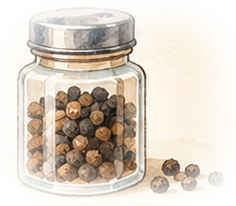
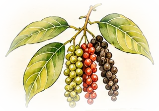
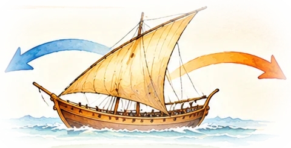
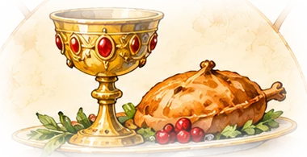

Capítol 1
La paradoxa del pebre
Per què el pebre valia una fortuna i avui és a totes les cuines?

⚡ En 30 segons
- A Londres, el 1438, un fuster havia de treballar més de dos dies per pagar una lliura de pebre (uns 450 grams).
- Avui, un pot de pebre costa uns pocs minuts de feina: és desenes de vegades més barat.
- El pebre no havia canviat. Va canviar el camí: qui el cultivava, per on viatjava i quants en treien profit.
- Entendre aquesta diferència és la clau de tota la història: per arribar a les espècies, els europeus van creuar oceans.
Fa 600 anys, el pebre era molt car. Un treballador necessitava 2 dies de feina per comprar-ne una bossa petita.
Avui el pebre és barat. En pocs minuts de feina en pots comprar.
Per què? Perquè el pebre venia de molt lluny i passava per moltes mans. Cada persona en treia diners.
Quant costava una lliura d’espècies?
L’historiador John Munro va comparar els preus de les espècies a Londres amb el sou d’un fuster especialitzat, que cobrava 8 diners (penics) al dia. El resultat és sorprenent:
Dies de feina per pagar una lliura (≈ 450 g), Londres 1438-1439
El safrà era la més cara: més de tres setmanes de feina per una lliura. Al capítol 9 descobriràs per què encara avui és car.
🧮 Calculadora: llavors i ara
Tria una espècie i una quantitat. Compara el temps de feina necessari.
Preus d’avui: pebre negre 18,89 €/kg i clau 41,33 €/kg (supermercat, 11/11/2026). Per passar els dies de 1438 a hores, comptem jornades d’unes 10 hores, de sol a sol.
Londres, 1438
Avui
Quatre preguntes per resoldre la paradoxa
Si el pebre és la mateixa planta, el preu havia de dependre d’altres coses. Aquesta web les investiga una per una:

On creix?
Moltes espècies només creixien en unes poques illes tropicals, a l’altra banda del món. Capítol 2

Com viatjava?
En vaixells que depenien dels vents, i amb caravanes de camells. Capítols 4 i 5

Qui la volia?
Cuiners, metges, esglésies i nobles que volien demostrar la seva riquesa. Capítol 6
Què va canviar?
Noves rutes, plantacions a tot el món i vaixells gegants. Capítol 9
Sabies que…?
El 1529, el rei Carles I va vendre a Portugal els seus drets sobre les illes del clau per 350.000 ducats. Una sola espècie podia valer tant com un regne petit. Ho veuràs al capítol 8.
Compte amb aquest mite
Sovint es diu que les espècies servien per dissimular la carn podrida. No és cert: qui podia pagar espècies, podia pagar carn fresca de sobres. Ho expliquem al capítol 6.
✍️ Posa-t’hi
Respon i comprova-ho a l’instant.
Fonts del capítol: J. Munro, preus de les espècies en dies de sou (Universitat de Toronto); preus de supermercat del 11/11/2026. Totes les fonts